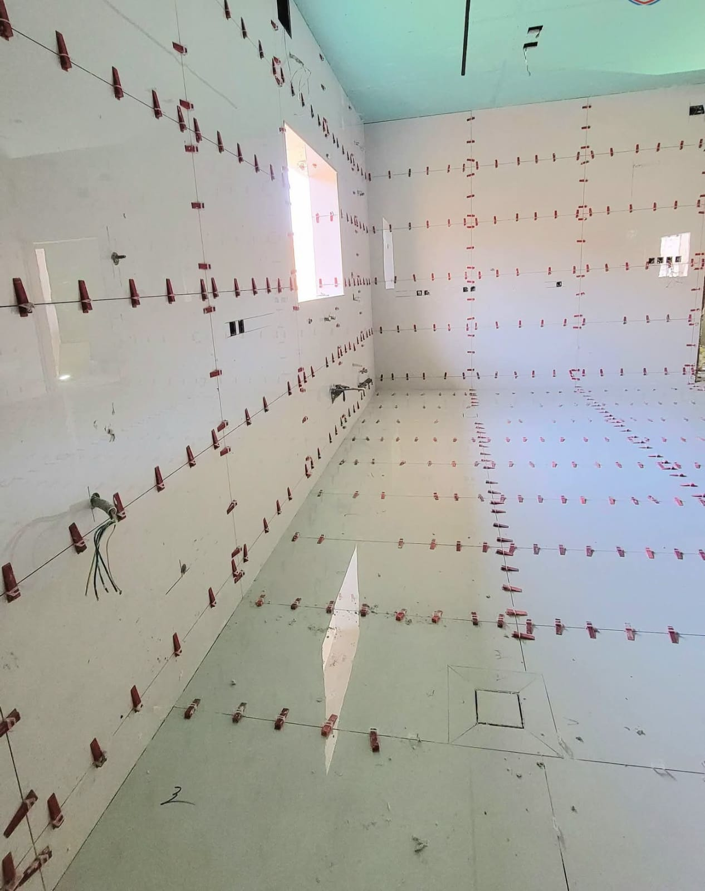
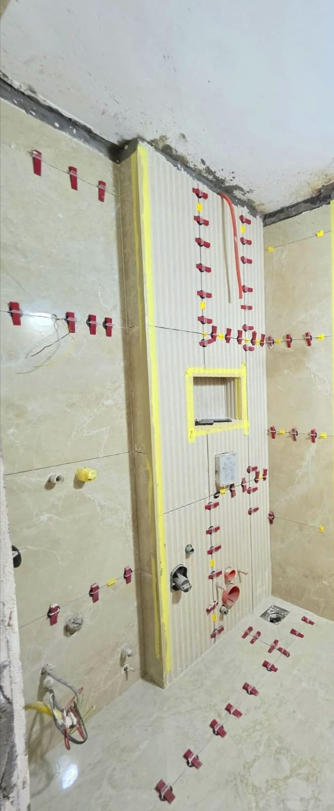

تعديل ميلان الجدران والأرضيات باللياسة والليزر قبل تركيب سيراميك 60 في 120 في حي الخالدية بجدة
أثناء فحص مشروع تشطيب مجلس عربي كبير لاستقبال الضيوف وكبار الشخصيات مع حمام استقبال في حي الخالدية بمدينة جدة كشف ميزان الليزر والقدة الطويلة وجود ميلان وشطرات واضحة في الجدران تصل إلى 3 سنتيمتر مع هبوط وتفاوت في منسوب الأرضيات وكان المطلوب تركيب بلاط مقاس 60 في 120 لجدران وأرضيات المجلس والصالة ومقاسات 60 في 60 و60 في 80 لحمام الاستقبال وهي مقاسات لا تقبل أي خلل في السطح

لماذا يفشل تركيب السيراميك بالغراء مباشرة على سطح مائل
- السماكة القياسية للغراء الغراء المرن مصمم للعمل بسماكة رقيقة وموحدة بين 3 إلى 5 مليمتر فقط وعندما يحاول العامل تعويض ميلان 2 أو 3 سنتيمتر بتحميل الغراء ينكمش أثناء الجفاف ويفقد تماسكه مما يسبب تطبيلاً سريعاً أو انفصال بلاط 60 في 120 عن الجدار
- انكشاف الشطرات في الزوايا تركيب البلاط على نفس ميلان الجدار القديم يجعل الزوايا غير قائمة فتظهر فراغات واسعة ومشوهة عند فرش الجلسة العربية أو تركيب مغاسل حمام الاستقبال
- تكسر الأرضية تحت الضغط تفاوت سماكة الغراء فوق أرضية غير مستوية يترك فراغات هوائية تحت منتصف البلاطة مما يعرضها للشروخ مع أقل وزن أو صدمة
خطوات تعديل ميلان الجدران بالبؤج والمحارة على الليزر
شرحنا للعميل الوضع الفني بكل أمانة ورغم أن إعادة التأسيس تضيف تكلفة إضافية إلا أنها الحل الوحيد لضمان جودة تدوم سنوات بدون مشاكل وبعد الموافقة نفذنا التالي
- تحديد الميول بالمليمتر شددنا خطوط ميزان الليزر على كامل محيط المجلس العربي وحمام الاستقبال لتحديد نقاط البروز والانخفاض بدقة
- تنفيذ البؤج والأوتار وزنا بؤج وأوتار المحارة على خط الليزر لضبط استقامة كل جدار وتصحيح شطرات الزوايا لتصبح قائمة بزاوية 90 درجة تماماً
- إعادة المحارة والتخشين أعدنا لياسة الجدران بالكامل باستقامة تامة مع تخشين السطح بدرجة مناسبة تمنح غراء البلاط أعلى قوة التصاق
طريقة تسوية الأرضيات المائلة قبل تركيب مقاس 60 في 120
- تعديل أرضية المجلس والصالة نظفنا الصبة الأرضية بالكامل ونفذنا طبقة تسوية أسمنتية موزونة بالليزر والقدة الطويلة لإلغاء كل نقاط الهبوط والتقعر حتى تجلس بلاطة 60 في 120 على سطح مستوٍ تماماً بدون أي فراغ هوائي في المنتصف
- ضبط ميول أرضية حمام الاستقبال أسسنا أرضية الحمام بميول هندسي دقيق ومحسوب باتجاه الصفاية قبل مرحلة البلاط لضمان تصريف المياه بسلاسة ومنع أي تجمع مائي في الزوايا
المعالجة بالماء والجفاف الكامل قبل فرد الغراء
- رش اللياسة والتسوية بالماء بعد الانتهاء من المحارة وتسوية الأرضيات التزمنا برش الأسطح بالماء لعدة أيام لمعالجة الأسمنت ورفع صلابته ومنع ظهور التشققات الشعرية
- انتظار الجفاف والتنظيف لم نبدأ التركيب على محارة طرية أبداً لأن الرطوبة المحبوسة خلف البلاط تضعف الغراء وتسبب تطبيلاً سريعاً وبعد تمام الجفاف نظفنا الجدران والأرضيات تماماً من الأتربة والغبار
تركيب سيراميك 60 في 120 ومنع تطبيل البورسلين بالهزاز والكلبسات
- فرد الغراء بالمشط ذو الحدين فردنا الغراء المرن بسماكة قياسية موحدة على الجدار والأرضية وعلى ظهر كل بلاطة معاً لتحقيق تغطية كاملة بنسبة مئة بالمئة
- تفريغ الهواء بالهزاز الميكانيكي مررنا الهزاز الميكانيكي على كامل سطح كل بلاطة مقاس 60 في 120 لطرد أي فقاعات هواء محبوسة وضمان التصاق كامل يمنع التطبيل نهائياً
- ضبط الفواصل بالكلبسات البيضاء والفواصل الأمريكي طابقنا خطوط بلاط الجدران مع خطوط الأرضية على ميزان الليزر وثبتنا جميع الحواف بالصلايب والفواصل الأمريكي والكلبسات البيضاء لمنع أي تسنين أو بروز بين البلاطات
- قص زوايا حمام الاستقبال بدقة في حمام الاستقبال بمقاسات 60 في 60 و60 في 80 نفذنا قص الزوايا بشطف نظيف ومطابق مع فتح مخارج السباكة والكهرباء بدقة بدون أي كسور أو تشويه مع التأكد النهائي من ميول التصريف

تنظيف الفواصل وفك الكلبسات والترويبة النهائية
- تنظيف الفواصل قبل الجفاف أزلنا زوائد الغراء من الفواصل وحول قواعد الكلبسات وهو طري لضمان عمق كامل ونظيف للترويبة
- فك الكلبسات بالاتجاه الصحيح بعد تمام جفاف الغراء فككنا الكلبسات البيضاء بضربة جانبية في نفس اتجاه الفاصل لحماية أطراف بلاط 60 في 120 من أي كسر أو خدش
- تنفيذ الترويبة المرنة عبأنا الفواصل بترويبة مرنة مقاومة للماء ومطابقة للون البلاط لإبراز تناسق المجلس العربي وحمام الاستقبال
- الاستلام النهائي بالقدة والليزر فحصنا كامل الجدران والأرضيات بالقدة الطويلة وميزان الليزر للتأكد من الاستقامة التامة وانعدام التسنين وسلامة ميول التصريف نحو الصفاية
أسئلة شائعة حول تركيب سيراميك جدة وتعديل اللياسة
هل يصلح الغراء لتعديل ميلان 2 أو 3 سنتيمتر في الجدار أو الأرضية
لا يصلح نهائياً لأن السماكة القياسية للغراء من 3 إلى 5 مليمتر فقط وأي تحميل زائد يسبب انكماش الغراء وتطبيل البلاط والحل الصحيح هو تعديل السطح بالبؤج واللياسة وتسوية الأرضية أولاً
لماذا يجب رش اللياسة بالماء وتركها تجف قبل تركيب البلاط
الرش بالماء يقوي طبقة المحارة والتسوية الأسمنتية وتركها تجف تماماً يمنع انحباس الرطوبة خلف الغراء ويحافظ على قوة التماسك لسنوات طويلة
هل تكلفة إعادة التأسيس أوفر من التركيب المباشر على الميلان
نعم بكثير لأن التأسيس الصحيح يحمي قيمة بلاط مقاس 60 في 120 ويغنيك عن خسارة التكسير وإعادة الشراء والتركيب إذا ظهر تطبيل أو ميلان بعد التسليم
ما الذي يشمله الضمان عند التنفيذ مع جوهرة جدة
يشمل الضمان استقامة الليزر ومستوى التركيب ومنع التسنين وتناسق الفواصل أثناء التنفيذ فقط ولا يشمل أعمال العزل نهائياً
روابط مفيدة داخل موقع جوهرة جدة
العودة إلى الصفحة الرئيسية لجوهرة جدة لتركيب السيراميك والبورسلين والرخام اقرأ أيضاً مقالة تركيب البورسلين بالليزر ومنع التطبيل في جدةجوهرة جدة لتركيب السيراميك والبورسلين والرخام بالليزر
ننفذ أعمال التركيب داخل مدينة جدة فقط في حي الخالدية وحي الحمدانية وحي الشاطئ وحي السلامة وحي الصفا وحي مشرف وباقي أحياء جدة بأحدث معدات ميزان الليزر والهزاز الميكانيكي والكلبسات البيضاء والفواصل الأمريكي